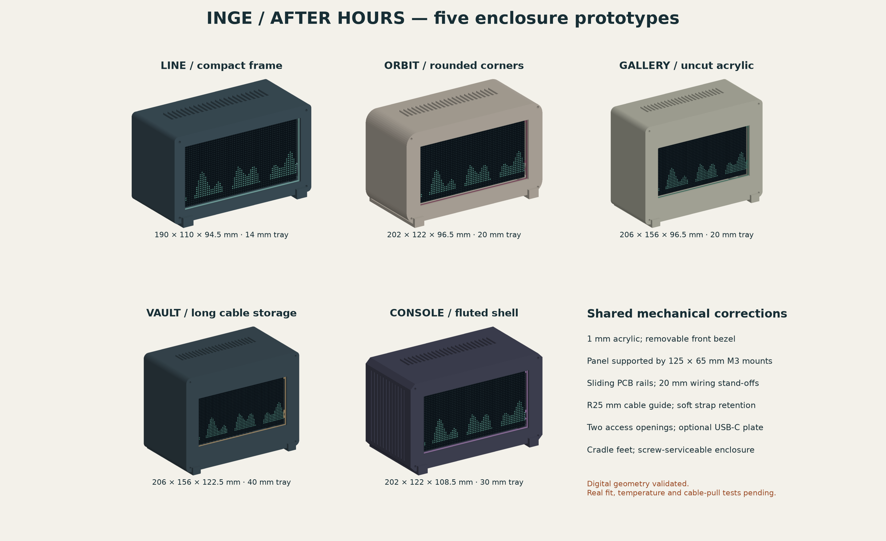

<!doctype html><html lang="en"><meta charset="utf-8"><meta name="viewport" content="width=device-width,initial-scale=1"><title>Inge / After Hours — five enclosures</title>
<style>
*{box-sizing:border-box}body{margin:0;background:#f3f1ea;color:#18343b;font:16px/1.5 system-ui,sans-serif}header{padding:28px 5vw 18px;border-bottom:1px solid #cad0c8}h1{font-size:clamp(26px,4vw,42px);line-height:1.1;margin:6px 0}small,.muted{color:#55696b}main{max-width:1500px;margin:auto;padding:24px 5vw}nav{display:flex;flex-wrap:wrap;gap:8px;margin-bottom:20px}button,select{font:inherit;padding:9px 15px;border:1px solid #b8c7be;border-radius:6px;background:#fffdf8;color:inherit;cursor:pointer}button[aria-pressed=true]{background:#234f4e;color:white}.layout{display:grid;grid-template-columns:minmax(0,1fr) 300px;gap:24px}canvas{width:100%;height:550px;display:block;touch-action:none;background:#e4e7df;border-radius:12px;outline-offset:4px}.controls{display:flex;gap:8px;align-items:center;flex-wrap:wrap;margin:12px 0}aside{padding:20px;background:#e4e7df;border-radius:12px}h2{font-size:25px;margin:0 0 12px}ul{padding-left:20px}a{color:#185f59;text-underline-offset:3px}p{margin:10px 0 18px}.flag{display:inline-block;padding:5px 10px;background:#dfebdf;border-radius:4px;font-size:13px}.note{font-size:14px;border-left:3px solid #a77643;padding-left:12px}.gallery img{width:100%;border-radius:10px}.gallery{margin-top:28px}.gallery h2{font-size:24px}table{border-collapse:collapse;width:100%;font-size:14px}th,td{text-align:left;padding:10px;border-bottom:1px solid #c6cec6}.scroll{overflow-x:auto}footer{padding:24px 0;color:#53696a;font-size:14px}@media(max-width:850px){.layout{grid-template-columns:1fr}canvas{height:400px}main{padding:20px}header{padding:24px 20px}}
</style><header><small>OCTOBER 09 · INGE / AFTER HOURS</small><h1>Five ways to frame the music.</h1><p>Compare actual enclosure geometry, open the back, or separate the parts.</p><span class="flag">Digital checks passed · physical fit remains to be tested</span></header><main>
<nav id="variants" aria-label="Enclosure variants"></nav><div class="layout"><section><canvas id="view" tabindex="0" aria-label="Interactive 3D enclosure; drag to rotate, scroll to zoom, arrow keys rotate"></canvas><div class="controls"><button id="front">Front</button><button id="rear">Rear</button><label>View <select id="mode"><option value="assembled">Assembled</option><option value="open">Open back</option><option value="exploded">Exploded</option></select></label><button id="reset">Reset</button></div><small>Drag to rotate · scroll to zoom · arrow keys rotate. Transparent acrylic is omitted in assembled views so the panel remains visible.</small><p id="error" role="alert"></p></section><aside><h2 id="name"></h2><p id="description"></p><p><strong id="size"></strong><br><small>Case envelope including rear port plate; feet add 4 mm below.</small></p><p id="lens"></p><p id="cable"></p><p class="note">Cable estimates are for one 6 mm effective bundle. Leave the power brick outside; retain a service loop and keep the antenna clear.</p><p><a id="preview">Front/rear preview</a><br><a id="exploded">Exploded image</a><br><a id="source">OpenSCAD model</a><br><a href="PRINT-GUIDE.md">Print & assembly guide</a></p></aside></div>
<div class="gallery"><h2>Compare the five prototypes</h2><div class="scroll"><table><thead><tr><th>Design</th><th>Case size, mm</th><th>Acrylic</th><th>6 mm cable estimate</th></tr></thead><tbody id="comparison"></tbody></table></div></div>
<footer>Models are printable prototypes, not a tested manufactured product. Mesh, interference and diagnostic slicing results are included; connector fit, screw engagement, heat and stability still need a real assembly check. <a href="AUDIT.md">Read the flaw audit</a>.</footer></main>
<script>
'use strict';const models=/*MODEL_DATA*/;
const names=['Line','Orbit','Gallery','Vault','Console'];
const descriptions=['Smallest footprint with a restrained rectangular frame. Best when excess cable length is modest.','Rounded corners and a softer silhouette. A medium tray inside the rear cover.','Broad architectural frame using the acrylic sheet without cutting.','Recommended starting point for long wires. Uncut acrylic and the deepest removable cable cassette.','Chamfered corners and fluted sides, with more cable room than Line or Orbit.'];
const canvas=document.getElementById('view'),gl=canvas.getContext('webgl',{antialias:true,alpha:false,preserveDrawingBuffer:true});
let active=3,yaw=.45,pitch=.3,zoom=1,mode='assembled',drag=null,buffers=[];
function norm(a){const n=Math.hypot(...a);return a.map(x=>x/n)}function cross(a,b){return[a[1]*b[2]-a[2]*b[1],a[2]*b[0]-a[0]*b[2],a[0]*b[1]-a[1]*b[0]]}
function shader(type,src){const s=gl.createShader(type);gl.shaderSource(s,src);gl.compileShader(s);if(!gl.getShaderParameter(s,gl.COMPILE_STATUS))throw Error(gl.getShaderInfoLog(s));return s}
let program,uniforms={};
if(gl){try{program=gl.createProgram();gl.attachShader(program,shader(gl.VERTEX_SHADER,`attribute vec3 pos;attribute vec3 normal;uniform vec3 right;uniform vec3 up;uniform vec3 forward;uniform vec3 centre;uniform vec3 offset;uniform float scale;uniform float aspect;varying vec3 n;void main(){vec3 p=pos+offset-centre;gl_Position=vec4(dot(p,right)*scale/aspect,dot(p,up)*scale,-dot(p,forward)/800.,1.);n=normal;}`));gl.attachShader(program,shader(gl.FRAGMENT_SHADER,`precision mediump float;varying vec3 n;uniform vec3 colour;uniform vec3 light;void main(){float d=.64+.34*max(0.,dot(normalize(n),normalize(light)));gl_FragColor=vec4(colour*d,1.);}`));gl.linkProgram(program);if(!gl.getProgramParameter(program,gl.LINK_STATUS))throw Error(gl.getProgramInfoLog(program));gl.useProgram(program);for(const k of ['right','up','forward','centre','offset','scale','aspect','colour','light'])uniforms[k]=gl.getUniformLocation(program,k);gl.enable(gl.DEPTH_TEST);}catch(e){document.getElementById('error').textContent=e.message;}}
else document.getElementById('error').textContent='3D is unavailable in this browser. The comparison and preview images below still work.';
function draw(){if(!gl||!program)return;const ratio=Math.min(window.devicePixelRatio||1,2);canvas.width=Math.floor(canvas.clientWidth*ratio);canvas.height=Math.floor(canvas.clientHeight*ratio);gl.viewport(0,0,canvas.width,canvas.height);gl.clearColor(.894,.906,.875,1);gl.clear(gl.COLOR_BUFFER_BIT|gl.DEPTH_BUFFER_BIT);const f=norm([Math.sin(yaw)*Math.cos(pitch),Math.sin(pitch),-Math.cos(yaw)*Math.cos(pitch)]),r=norm(cross([0,1,0],f)),u=cross(f,r);const exp=mode==='exploded';for(const [k,a] of [['right',r],['up',u],['forward',f],['light',[f[0]-.3,f[1]+.8,f[2]]],['centre',[0,0,models[active].body_depth/2+(exp?32:0)]]])gl.uniform3fv(uniforms[k],a);gl.uniform1f(uniforms.aspect,canvas.width/canvas.height);gl.uniform1f(uniforms.scale,zoom/(exp?175:125));const p=gl.getAttribLocation(program,'pos'),n=gl.getAttribLocation(program,'normal');gl.enableVertexAttribArray(p);gl.enableVertexAttribArray(n);for(const ob of buffers){if(ob.name==='acrylic'&&!exp)continue;if(mode==='open'&&['lid','ports'].includes(ob.name))continue;let z=0;if(exp){if(ob.name==='bezel')z=-40;else if(ob.name==='keeper')z=-22;else if(ob.name==='acrylic')z=-32;else if(ob.name==='panel')z=-4;else if(ob.name==='lid')z=90;else if(ob.name==='ports')z=115;else if(ob.name.startsWith('bridge'))z=15;else if(!ob.name.startsWith('foot')&&ob.name!=='body')z=50;}gl.uniform3fv(uniforms.offset,[0,0,z]);gl.uniform3fv(uniforms.colour,ob.colour);gl.bindBuffer(gl.ARRAY_BUFFER,ob.buffer);gl.vertexAttribPointer(p,3,gl.FLOAT,false,24,0);gl.vertexAttribPointer(n,3,gl.FLOAT,false,24,12);gl.drawArrays(gl.TRIANGLES,0,ob.count);}canvas.dataset.rendered='true';}
function select(i){active=i;const m=models[i];document.querySelectorAll('nav button').forEach((b,k)=>b.setAttribute('aria-pressed',String(k===i)));document.getElementById('name').textContent=names[i];document.getElementById('description').textContent=descriptions[i];document.getElementById('size').textContent=`${m.width} × ${m.height} × ${m.overall_depth} mm`;document.getElementById('lens').textContent=`${m.lens[0]} × ${m.lens[1]} × 1 mm acrylic · ${i===2||i===3?'use full purchased sheet':'cut from purchased sheet'}`;document.getElementById('cable').textContent=`${m.cassette_height} mm tray · approximately ${(Math.floor((m.cassette_height-4.4)/6)*.2).toFixed(1)} m of coiled cable, plus separate service tails.`;for(const [id,file]of [['preview','preview.png'],['exploded','exploded.png'],['source','model.scad']])document.getElementById(id).href=`${m.name}/${file}`;if(gl){for(const b of buffers)gl.deleteBuffer(b.buffer);buffers=m.objects.map(o=>{const str=atob(o.vertices),bytes=new Uint8Array(str.length);for(let j=0;j<str.length;j++)bytes[j]=str.charCodeAt(j);const buffer=gl.createBuffer();gl.bindBuffer(gl.ARRAY_BUFFER,buffer);gl.bufferData(gl.ARRAY_BUFFER,bytes,gl.STATIC_DRAW);return{...o,buffer}});}draw();}
models.forEach((m,i)=>{const b=document.createElement('button');b.textContent=`0${i+1} ${names[i]}`;b.onclick=()=>select(i);document.getElementById('variants').append(b);const tr=document.createElement('tr');for(const t of [names[i],`${m.width} × ${m.height} × ${m.overall_depth}`,i===2||i===3?'Full sheet':'Cut164 × 84 mm',`${(Math.floor((m.cassette_height-4.4)/6)*.2).toFixed(1)} m`]){const td=document.createElement('td');td.textContent=t;tr.append(td)}document.getElementById('comparison').append(tr)});
document.getElementById('mode').onchange=e=>{mode=e.target.value;draw()};document.getElementById('front').onclick=()=>{yaw=0;pitch=0;draw()};document.getElementById('rear').onclick=()=>{yaw=Math.PI;pitch=0;draw()};document.getElementById('reset').onclick=()=>{yaw=.45;pitch=.3;zoom=1;mode='assembled';document.getElementById('mode').value=mode;draw()};canvas.onpointerdown=e=>{drag=[e.clientX,e.clientY];canvas.setPointerCapture(e.pointerId)};canvas.onpointermove=e=>{if(drag){yaw+=(e.clientX-drag[0])*.009;pitch=Math.max(-1.4,Math.min(1.4,pitch+(e.clientY-drag[1])*.009));drag=[e.clientX,e.clientY];draw()}};canvas.onpointerup=()=>drag=null;canvas.onpointercancel=()=>drag=null;canvas.addEventListener('wheel',e=>{e.preventDefault();zoom=Math.max(.45,Math.min(2.2,zoom*Math.exp(-e.deltaY*.001)));draw()},{passive:false});canvas.onkeydown=e=>{if(e.key.startsWith('Arrow')){e.preventDefault();if(e.key==='ArrowLeft')yaw-=.1;if(e.key==='ArrowRight')yaw+=.1;if(e.key==='ArrowUp')pitch=Math.min(1.4,pitch+.1);if(e.key==='ArrowDown')pitch=Math.max(-1.4,pitch-.1);draw()}};new ResizeObserver(draw).observe(canvas);select(active);
</script></html>
